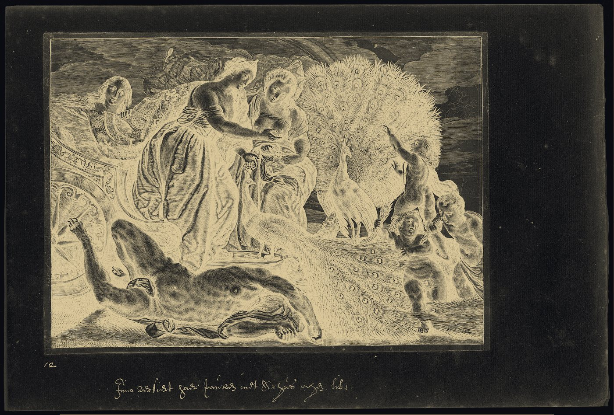

Independent research groupest. 2026Panoptes · a hundred eyes, now stars
Argus
Lab
Agents that see, act & verify.
“Lost, but moving forward.”
ScrollMythos
why the peacock colors
The watchman with a hundred eyes.
In Greek myth, Argus Panoptes kept some eyes open at all times — nothing escaped his gaze. We build agents the same way: perceiving real interfaces, acting across them, and verifying every step of the work.
When Argus fell, Juno set his hundred eyes into the peacock's tail. The iridescence you see on this page — teal to violet to gold — is that plumage. Our colors are his eyes.
Research
the agentic stack, watched end to endReading what interfaces actually render — charts, badges, maps, lazy-loaded and animating elements — on live webpages and desktop screens.
Executing non-trivial operations: sliders and date-range pickers, map drawing, video control, real mouse-and-keyboard automation across applications.
Judge agents and rubric trees of independently checkable criteria, grounded in live sources — so a claim of “done” actually means done.
Work
two testbeds, one thesisThe same loop — see, act, verify — instantiated in the two environments where real work happens: the browser and the desktop.
Can an agent plan a trip across five real websites — and prove that it did?
A benchmark of cross-site tasks on live websites, built by decomposing sites into structured cards and recomposing them into realistic workflows. Every task is scored by a verifiable agent-as-a-judge: a rubric tree of independently checkable execution and perception criteria, grounded in cited sources. State-of-the-art agents pass fewer than one task in ten.
What if the operator lived on your machine — not in someone's cloud?
A local-first desktop operator: multimodal models watch the screen, decide, and act with a real mouse and keyboard. Screenshots, decisions, and execution stay on localhost. Every action passes through a typed contract and a whitelisted executor, with per-step confirmation and a dry-run mode that verifies the whole loop without touching your desktop.
Ethos
how we workWatch the real thing.
Agents should be studied on live interfaces, not sanitized sandboxes.
Claims need receipts.
If an agent says it did the work, the work must be independently checkable.
Small group, long gaze.
We would rather stare at one hard problem for a year than skim ten.
Lost, but moving forward.
Not knowing the way is no reason to stand still.